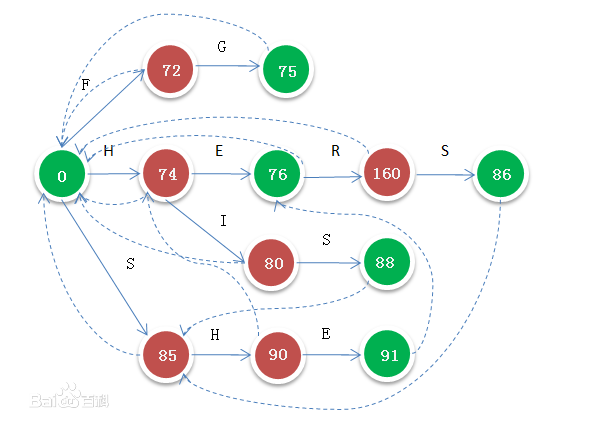

1.根据字符构造trie树
2.构建失败匹配指针
1.根节点的所以一代子孩子失败指针都指向root
2.子节点匹配失败时，找到父节点的失败指针，找不到就一直找，直到找到root还匹配不到，直接指向root
3.文本串匹配
1.如果已经匹配到完整的模式串或者压根匹配不到，根据失败指针切换线路继续向下查找
2.如果匹配到了，那么就继续向下匹配class ACNode {
constructor(data){
this.data = data
this.isEndingChar = false
this.children = new Map()
this.length = 0
this.fail = null
}
}
class ACTree {
constructor(){
this.root = new ACNode('/')
}
insert(text){
let node = this.root
for(let char of text ){
if(!node.children.get(char)){
node.children.set(char,new ACNode(char))
}
node = node.children.get(char)
}
node.isEndingChar = true
node.length = text.length
}
failurePointer(){
let root = this.root
let queue = []
queue.push(root)
while(queue.length > 0){
let currentNode = queue.shift()
for(let child of currentNode.children.values()){
if(!child){
continue
}
if(currentNode == root){
child.fail = currentNode
}else{
//不是一代子节点才指向
let grandFatherNode = currentNode.fail
while(grandFatherNode){
let failNode = grandFatherNode.children.get(child.data)
if(failNode){
child.fail = failNode
//找到失败节点就不往下找了
break
}
grandFatherNode = grandFatherNode.fail
}
if(!grandFatherNode){
child.fail = root
}
}
queue.push(child)
}
}
}
match(text){
let root = this.root
let len = text.length
let currentNode
for(let i = 0; i < len; i++){
let char = text[i]
if(!currentNode){
currentNode = root
}
while(!currentNode.children.get(char) && currentNode != root){
//匹配不到就换线
currentNode = currentNode.fail
}
currentNode = currentNode.children.get(char)
let tmp = currentNode
while(tmp != root){
if(tmp.isEndingChar){
console.log(`from ${i - tmp.length + 1} length: ${tmp.length} str: ${text.substr(i - tmp.length + 1,tmp.length)}`)
}
//匹配到了就继续看看其他线有没有可以匹配成功的
tmp = tmp.fail
}
}
}
}
function match(text,patterns){
const autoMeta = new ACTree()
for(pattern of patterns){
autoMeta.insert(pattern)
}
autoMeta.failurePointer()
autoMeta.match(text)
}
let patterns = ["at", "art", "oars", "soar"];
let text = "soarsoars";
match(text, patterns);
let patterns2 = ["Fxtec Pro1", "谷歌Pixel"];
let text2 = "一家总部位于伦敦的公司Fxtex在MWC上就推出了一款名为Fxtec Pro1的手机，该机最大的亮点就是采用了侧滑式全键盘设计。DxOMark年度总榜发布 华为P20 Pro/谷歌Pixel 3争冠";
match(text2, patterns2);